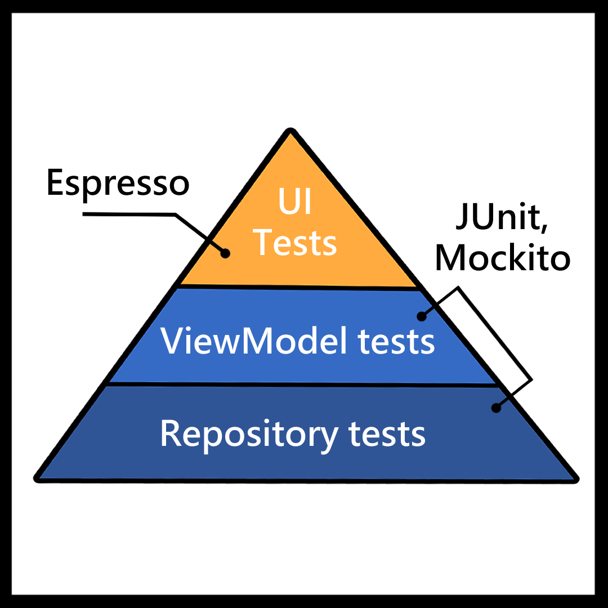
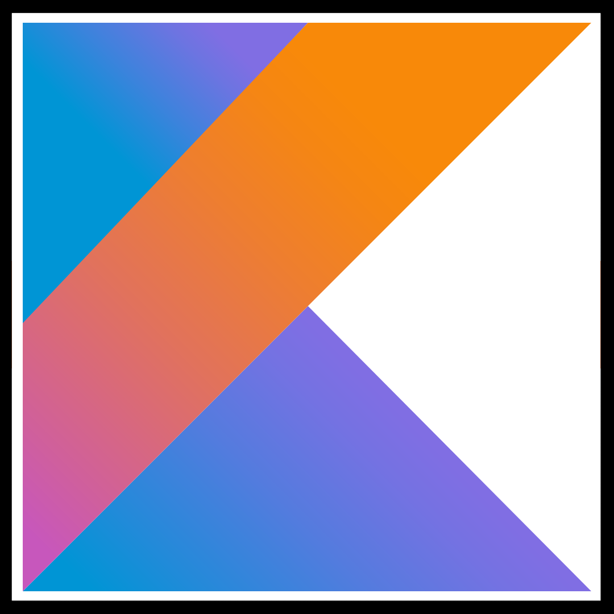

Threshold voltage issue
The charger was unable to detect or recharge the battery that had dropped below the minimum voltage level
This page is a (responsive) presentation of some of my projects
hosted on GitHub and other tech. experiments.
They are mostly mobile oriented.
A forked project (listing fake GitHub users) to discover JAVA, Android project in MVC architecture and Git/GitHub use. I also added two features: delete a user and create a random user.
Also a forked project. This time the goal was to implement interactions with a RecyclerView and create a "detail" activity. Unit and instrumentation tests were also made for these new features.
Discovery of fragments but also navigation between them with a ViewPager2 in the context of "MaReu" application. TabLayout, PageAdapter and Drawer were also tested.
Mobile application made in JAVA. It gave me the opportunity to familiarize myself with the basic of Android components but also to discover the MVVM structure. You can check this Spotlight#1 for more information.
Todoc is a task management application. Only, the data persistence remained to be developed. For this, we chose Room, a library that allows the implementation of a SQLite database. (Physical data model, class diagram and Use case were also made)
Android Java application in MVVM architecture with LiveData, Retrofit, FireBase, Workmanager, Maps SDK and Places API (web services) use. You can check this Spotlight#2 for more information.
Overview of the different GitHub repositories in a website format (HTML5 UP design). Hosted with GitHub page.
Advent of Code is an Advent calendar of small programming puzzles who can be found here. I used these to practice fundamental concepts of Kotlin.
A side project using an ESP32 with Bluetooth and Firebase access to learn Kotlin in an Android environment and IoT programming.
A Kotlin app that follows the MVVM architecture (with Clean Architecture elements) with DualPane, Flow, LiveData, Coroutines, WorkManager, Room, Maps SDK, and Places API use. You can check this Spotlight#3 for more information,
The MaReu app is a meeting management application. The user have the possibilities to add/delete meetings but also filter them by date or location. This is my first application made from scratch, it allowed me to practice the MVVM architecture and Data Binding.
The Go4Lunch application is designed to be a collaborative application used by all employees. It allows you to search for a restaurant in the area, then select the one of your choice by sharing it with colleagues. In the same way, it's possible to consult the restaurants selected by colleagues in order to join them. Shortly before lunchtime, the application will notify the different employees to invite them to join their colleagues.

The RealEstateManager app is a property management application specifically developed for agents to efficiently manage their real estate portfolio. This app implement a two pane layout feature: Try me

JUnit, Mockito, and Espresso are tools that help to create and run software tests.
Unit tests check individual parts of the code and are run on a local machine (through a JVM), while instrumented tests check the overall functionality of the app on an Android device or emulator.
Both Unit tests and Instrumented tests are important as they help to improve the overall quality of the software, save time and money in the long run by identifying errors. Incorporating them into the development process can also serve as a guide for architectural refactoring and standardization, resulting in a more maintainable and readable codebase.
In addition to the APK, android studio allow also "App Bundles", a new way to distribute apps on the Play Store.
An app bundle is a file format that contains all the compiled code and resources of an app, but it allows Google Play to generate and serve optimized APKs for different devices.
Additionally, it provides more flexibility to manage and release apps, allowing different variations and configurations of the app in a single place.
Firebase is a mobile and web application development platform developed by Google.
It provides a variety of tools and services for building Backend-as-a-Service (BaaS) platform.
This allows developers to implement backend functionality such as real-time databases, authentication, and hosting.
Kotlin is a modern programming language developed by JetBrains.
It's interoperable with Java, allowing developers to use both languages in the same project.
Kotlin's null safety feature helps prevent common errors and crashes in Android apps.
It also supports coroutines, making it easy to write asynchronous code that runs seamlessly on the UI thread,
extensions functions, lambdas, and other powerful constructs that simplify Android app development overall.
The charger was unable to detect or recharge the battery that had dropped below the minimum voltage level
After utilizing it for three years, it became necessary to replace the battery and the faulty audio jack flex connector
You can see 3 points (Pal ; JP1 ; NTSC) The point JP1 is connected to the point NTSC in order to have 60hz on the European console
Testing the switch implementation with the embedded game Alex Kidd
first boot (faulty) - Model B - 4GB
This device will be used for an arcade machine
Test kit Open Source 2.4 "TFT 1Msps Digital (not welded)
Controls side
Computer side
Additional, custom made, controller
Circuit board inside a laptop computer that contains the computer's central processing unit (CPU), memory, and other components that allow the laptop to function
Manufactured and sold by Apple Computer, Inc. from 1990 to 1997. Disassembled here to expand the RAM
SimCity test after the specs upgrading
The issue was on the buck converter part of the motherboard. the replacement of the capacitors fixed it
A backlight kit after removing the polarizing surface at the back of the original LCD screen
Related to a problem of ground and 220v
{kind=link}
{kind=link}
{kind=link}
{kind=link}
{kind=link}
{kind=link}
{kind=link}
{kind=link}
{kind=link}
{kind=link}
{kind=link}
{kind=link}
{kind=link}
{kind=link}
{kind=link}